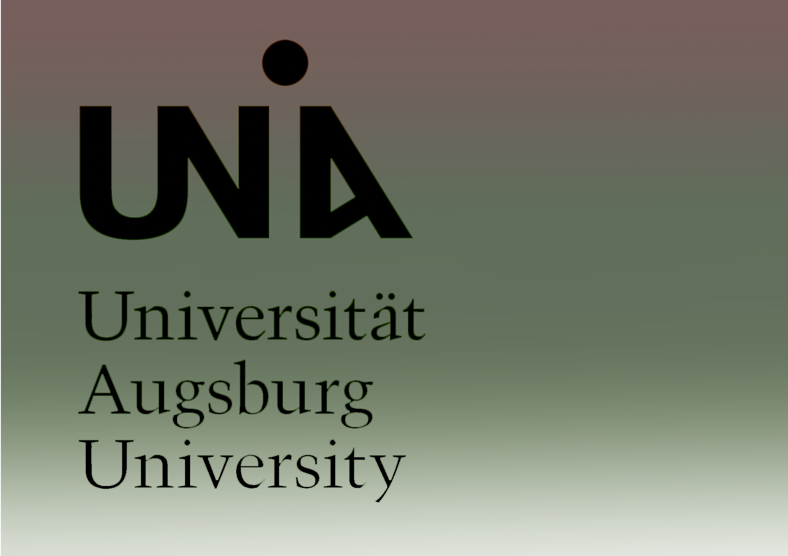
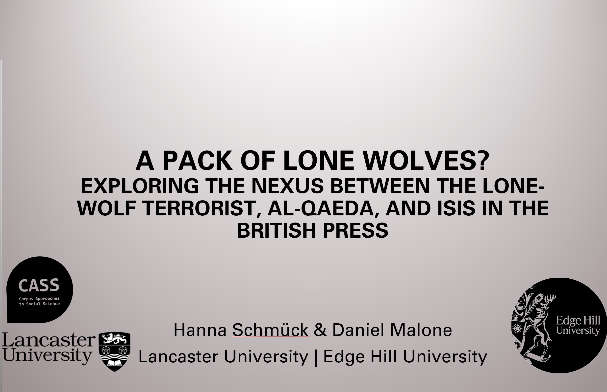

I presented findings from my PhD project at the International Conference for Corpus Linguistics. A video of my talk can be accessed here:
Hanna Schmück
I'm a Research Associate at the University of Augsburg. Until recently, I was a a Research Associate at the University of Glasgow where I was working on the linguistic and data visualisation outputs of the OHOS Project. I was also a Research Assistant and Associate Lecturer at Lancaster University where I did my PhD. I greatly enjoy all things corpus linguistics, computational linguistics, and data visualisation. The main aim of my work is to develop new, explainable methodologies and workflows so we can analyse (existing) linguistic data in new ways and further our understanding of language and the mind. I also greatly enjoy working with data from the heritage sector and exploring the concept of language as heritage. Have a look at my research/projects, publications, learn more about what I get up to, and feel free to get in touch if you want to explore possible collaborations.
Current Role at the University of Augsburg
Research Associate - Chair for Natural Language Understanding (Prof. Friedrich), Faculty of Applied CS

I am a member of the HLT@Augsburg group and work on a variety of projects, chiefly (from September 2025) on the Computational Discourse Analysis and Processing across Languages and Time project with Prof. Annemarie Friedrich and Dr. Jakob Prange.
As a Research Assistant on this DFG-funded project, I support research developing a computer-aided framework for analysing discourse modes in texts. I co-create annotation guidelines and diachronic corpora, contribute to corpus studies on grammatical structures in historical German texts and discourse patterns in English historiography, and assist with developing computational tools for analysis. Our work extends beyond traditional register-based approaches to examine how passage-level discourse features evolve over time.
I am also teaching the INF-0467: Seminar Natural Language Understanding module (UG + PG).
Experience at the University of Glasgow
Research Associate - Information Studies, School of Humanities
The project I was working on, Our Heritage, Our Stories, is a Discovery Research Project funded by the Arts and Humanities Research Council, as part of the Towards a National Collection programme. It aims to make community-generated digital content from a large number of different community archives more linkable, searchable, and to make it available alongside custodial resources like The National Archive. My main research area within this project is identifying how corpus linguists can benefit from the rich resources found in community archives and how language can be valued and appreciated as a heritage object. I have also created the visualisation outputs (named entity networks) for the project. These can be found here.
Projects and Experience at Lancaster University
-
Teaching - Undergraduate Modules
 I have been teaching several modules at Lancaster
University since 2020. Modules I have taught so far include LING228 (Child Language
Acquisition), LING315 (Forensic Linguistics), LING326 (Corpus Linguistics), LING330 (Language, Cognition and Culture), LING324 (Cognitive Linguistics), and LING316 (Psycholinguistics).
I have been teaching several modules at Lancaster
University since 2020. Modules I have taught so far include LING228 (Child Language
Acquisition), LING315 (Forensic Linguistics), LING326 (Corpus Linguistics), LING330 (Language, Cognition and Culture), LING324 (Cognitive Linguistics), and LING316 (Psycholinguistics). - Teaching - MOOCI have been deputy lead / lead mentor for Lancaster's "Corpus Linguistics - Method, Analysis, Interpretation" online course for multiple years now. This course runs yearly, has multiple thousands of participants (at the time of writing a cumulative count of over 70,000) and I have been involved since 2020.
- Mentoring - Methods North WestI was working as a mentor for research students as part of a Methods NW project enabling interdisciplinary and interinstitutional research collaborations. My role involved advising the researcher in methodological matters with regards to corpus linguistics.
- Mentoring - Coding SessionsI was working as a mentor teaching other academics programming skills (R/Python). In this role, I designed a curriculum around the researchers' individual project aims, set challenges, and cooperate with them to find efficient, robust, interpretable, and easily replicable solutions.
- Teaching and Technical Assistance - Summer Schools in Corpus LinguisticsI have been helping with the Lancaster Summer Schools in Corpus Linguistics since 2020. This has involved both teaching Q&A sessions as well as helping with the technology behind the scenes (setting up and recording Teams live events, monitoring the chat, operating the presentations etc.).
- Research Assistant Roles - BNC Assistant
 I worked on preprocessing and data cleaning
of the British National Corpus 2014 from 2020 to its publication in late 2021.
I worked on preprocessing and data cleaning
of the British National Corpus 2014 from 2020 to its publication in late 2021. - Research Assistant Roles - Data ProcessingI worked on a syntactic coding project doing data cleaning and advanced preprocessing in 2022.
- Research Assistant Roles - Manual CodingI started working on a project investigating language testing data in the APTIS corpus, a corpus compiled in collaboration with the British Council. For this project, I carried out manual pragmatic coding.
- Research Assistant Roles - Data ProcessingI worked on L2 language proficiency test data, also from the APTIS corpus, mainly data processing, formatting and statistical analyses of epistemic markers.
- Research Assistant Roles - LANA Corpus ProcessingI worked on the the Lancaster-Northern Arizona Corpus of American English (LANA) project in collaboration with colleagues at ASU.
- Research Assistant Roles - Multimodal Corpora using CloudVisionI worked on a multimodal newspaper corpus compilation project with Professor Paul Baker. My role entails writing custom Python scripts for collecting the corpus data from several UK newspaper websites, downloading and processing the images, interfacing with Google CloudVision and Vertex AI for image tagging, and designing the multimodal corpus. Alongside this, this project entails an extensive manual evaluation of using Vertex AI for mutimodal corpus analysis. I have further developed a small tool to display the images based on their tags to enable effective multimodal analyses.
- Technical Assistant Roles - ECR EventsI did the recording and communication for the Quantitative Research Methods for Social Sciences for early career researchers event series. The videos of past sessions are available here.
- Technical Assistant Roles - BNC launch eventI helped with the live stream and onsite organisation of the BNC launch event (over 1,200 participants) in 2021.
- Technical Assistant Roles - CHIMED-3I helped with the live stream and onsite organisation of the CHIMED-3 conference in 2023.
- Volunteering - Postgraduate Liaison of the LAEL Society
 I was the postgraduate
liaision of the LAEL Society from 02/2020 to 06/2022.
I was the postgraduate
liaision of the LAEL Society from 02/2020 to 06/2022.
- COMPILE Learning - Open Access Programming Skills DevelopmentI coordinate the Lancaster branch of COMPILE and teach select pyhton and regex lectures.
- Lone Wolf NetworksA research project looking at discourses surrounding lone
wolf terrorism using network visualisations.
- Corpus Linguistics and Collocation Networks - School of Foreign Languages at the University American College Skopje, North Macedonia
- Research Management and Open Access via the OSF - COMPILE
- Lessons learnt from teaching Python - PyData Lancaster, see presentation here
- Mapping Meaning: Large Linguistic Networks in the Digital Humanities Landscape - DH Forum @ Lancaster University
- Large Linguistic Networks: A case study on Lone-Wolf Terrorism in the British Press - University of Glasgow
- Brexit means Brexit? Ein Symposium - Akademie der Wissenschaften, Mainz - 03-07 December 2017
- BAAL Corpus Linguistics Special Interest Group Annual Worskhop: Corpora, Discourse and Society - Lancaster - 13 November 2019
- Advanced Language Processing Winter School - ALPS, 17-22 January 2021
- Machine Learning for Humanists - N8 CIR June 2021
- The International Corpus Linguistics Conference 2021 - 13-17 July 2021
- École thématique d'été « Annotations » - 30 May - 03 June 2022
- The 43rd Annual Conference of the International Computer Archive for Modern and Medieval English - Corpus Linguistics: A New Normal? 27-30 July 2022
- CHIMED-3, 3rd International Conference on Historical Medical Discourse - London - 11-12 May 2023
- CL2023, 12th International Corpus Linguistics Conference - Lancaster - 03-06 July 2023
- The 45rd Annual Conference of the International Computer Archive for Modern and Medieval English - Corpus Linguistics: Interlocking Corpora and Register(s): Diversity and Innovation. 28-22 June 2024
- UCREL NLP Summer School 2024 - 24-26 July 2024
- Towards a National Collection Conference - 20-21 November 2024
- BEYOND conference - 25-27 November 2024
Teaching - Autumn School in Corpus Linguistics
I was teaching a 13 week autumn school for academics hoping to further their corpus linguistic skills and professional development at Lancaster University.
Independent Projects and Experience
Conferences and Presentations
Please click on headings to see abstracts/videos.
CL2021 - 16.-20.07.2021, Limerick Ireland (online)
UCREL - 03.06.2021, Lancaster University (online)
I gave a talk on "Traversing Language Structures: Creating, Exploring and Visualising Large Scale Linguistic Networks" as part of the UCREL seminar series. Abstract: How does the language we are surrounded by differ from the language in our Mental Lexicon? We try to explore this question by developing new methods to display, analyse and compare large-scale linguistic networks using graph-theoretical parameters. The aim is to examine structural similarities and differences between a collocation network (based on the BNC2014 / BNC2014 Baby+(Brezina, 2019)) and a psycholinguistic network (based on cue-response pairs provided by over 90,000 participants for the SWOW-EN project (De Deyne et al., 2018)) in order to further our understanding of the relationship between language perception and language production. In addition to this, a new, dynamic visualisation of said networks furthermore allows for identifying "latent patterns" (Dong & Buckingham, 2018) in the data that would not have been observable when starting an analysis using pre-determined words of interest. In this presentation, the methodology and overarching justifications for the project will be presented alongside a demonstration of several custom network visualisations in Cytoscape (Shannon et al., 2003) and a case study exploring properties of the BNC2014 Baby+ and SWOW-EN. A video of my talk can be accessed here:
'Annotations' Summer School / École thématique d’été « Annotations » - 30.05.-03.06.2022, Banyuls-sur-Mer
I gave a talk titled 'Lessons Learnt from Graphing Linguistic Connections' at the École thématique d’été « Annotations » in France. This conference/summer school was organised by GDR Lift/Sorbonne.
ICAME43 - 27.-30.07.2022, Cambridge, UK
I presented methodological findings from my PhD project at the 43rd Annual Conference of the International Computer Archive for Modern and Medieval English (ICAME) My abstract can be found here (page 152).
In the wake of many 'new normals' in linguistics, new tools to explore linguistic data are steadily being proposed and implemented. This study aims to showcase one of these novel approaches: large scale linguistic network visualisations and how they can shed light on the interplay between language production and language perception. For the purpose of demonstrating strengths and limitations of this approach we carry out a case study on the basis of the following research questions: What is the collocational embedding of the word normal in spoken British English? What shape might the associative embedding of the word normal in native BrE speaker's mental lexicon take? In order to explore this, a multidisciplinary approach is taken that spans corpus linguistics, psycholinguistics and graph theory. The exact method employed to investigate word embeddings/context here is based on a custom-built python scripts used to pre- process and weight corpus data as well as word association data. First sentence-span tuples from the spoken BNC 2014 (Love et al, 2017) are extracted while retaining their directionality – an often underreported yet crucial property (Michelbacher et al., 2011; Gries; 2013, McConnell & Blumenthal-Dramé, 2019) – and the corresponding MI2 scores are calculated. Then the Small World of Words word association database (SWOW; De Deyne et al, 2019) is processed and filtered to only contain responses by British participants for comparability with the BNC. The obtained collocations (MI2 ≥ 10) and association pairs (Association weight ≥ 1) are fed to Cytoscape (Shannon et al., 2003) via py4cytoscape. The visual representations of the BNC and SWOW-UK networks surrounding the word normal (Figures 1 and 2) are created on the basis of an edge- weighted spring directed layout (Kamada & Kawai, 1989) which roughly maps MI2 scores and association weights onto the displayed distances between words. Lastly, a range of graph theoretical properties for both networks are extracted and interpreted. The results indicate that both the complete SWOW UK network and the complete Spoken BNC 2014 network exhibit small world properties (Watts & Strogatz, 1998). Qualitatively speaking, the collocations surrounding normal in the spoken BNC 2014 are generally sparser and the resulting subnetwork is denser than the one emerging from word associations. In the BNC, key topics surrounding the term are personal relationships and looks. These are organised around a strong network core composed of discourse markers and frequent verbs such as like, really, well etc. The word association dataset, however, looks markedly different and almost fractures into five distinct topic areas: antonyms of normality, society, health, abstract notions of normality, and discourse surrounding drugs. This suggests discrepancies between the mental association processes surrounding abstract terms such as normal and usage of such terms in everyday conversation. Lastly, further applications of this methodology are briefly remarked upon. These include optimising language pedagogy practices (Xiao & McEnery, 2006; Webb & Kagimoto, 2009) via assessing how central certain terms are to a learner's language network and exploring network cliques which is useful for lexicography (Gablasova et al., 2017; Simpson-Vlach & Ellis, 2010) and researching language change (Chen et al., 2018).
CL2023 - 03.-06.07.2023, Lancaster, UK
At CL2023 I presented two papers: Two approaches to collocation networks: GraphColl and LLN (with Vaclav Brezina) and Deconstructing Discourses – A network-based approach to analysing Lone Wolf Terrorism in British Newspapers (see Book of Abstracts).I also helped organise and chair sessions.
Abstract (I): This paper compares two approaches to the creation and analysis of collocation networks: the GraphColl function currently available through #LancsBox and #LancsBox X (Brezina et al., 2020) and a Python and Cytoscape-based (Shannon et al., 2003) custom pipeline for visualisation and graph theoretical analysis of corpus-wide linguistic networks (LLN). Collocation networks are used to visualise discourse relationships, "aboutness" of a text or discourse, semantic relations (Pecina, 2010; Xiao & McEnery, 2006; Brezina, 2016; Baker, 2016; Brezina et al., 2015) as well as lexicogrammatical features (McEnery & Brezina, 2019). GraphColl is an accessible tool to view collocational relationships localised to a particular area of discourse; it allows selecting a particular set of search terms, association measure parameters, window spans and thresholds, and retains information on the type, lemma and POS level before plotting collocation networks. LLN, on the other hand, is the result of a methodological triangulation (Noble & Heale, 2019; Tucker & Ernestus, 2016) and integration synthesis (Wyatt, 2022) of concepts from corpus linguistics and graph theory. A core difference is that LLN yields graph theoretical parameters that describe all collocations found in the entire corpus thus producing much larger networks. It also incorporates a graph theoretical exploration e.g. in order to compare different corpora via their collocational density, the average distance between their collocates, etc. Beyond these global descriptions, LLN also allows for clustering to explore different 'layers of discourse'. This paper will provide an in-depth demonstration of how the collocation networks generated by the two tools differ. The case study will focus on the topic of substance abuse across discourses represented in the BNC2014 (Brezina et al., 2021; Love et al., 2017). The implications for corpus-based discourse analysis will be discussed.
Abstract (II). The aim of this paper is to showcase interdisciplinary novel approaches to collocation network analysis via a case study on lone wolf terrorism discourses in the British press using the Lone Wolf Corpus (LWC; Malone, 2020). Aboutness, special functions of words, and semantic relations are highly relevant when examining discursively complex topics such as lone wolf terrorism, and all of these features emerge from collocational profiles (Pecina, 2010; Xiao & McEnery, 2006; Brezina, 2016; Baker, 2016; Brezina et al., 2015). Extending this line of thought, an analysis of clusters containing heavily interrelated collocates can represent different layers of discourses contained in a corpus and thus constitute a valuable addition to the linguist's toolbox. The LWC contains just under 8.5 million words of British newspaper coverage on lone wolf terrorism and serves as the basis for discourse cluster generation. spaCy (Montani et al., 2022) is used for POS-tagging and lemmatising the texts, collocation scores for all sentence-level bigrams (CPN: 6a-LogLikelihood(50), sentence, C0-NC0; filtered to only contain nouns, lexical verbs, adverbs, and adjectives[1]) are then generated in Python. The graph theoretical visualisation and analysis of the remaining list of collocations is carried out via py4cytoscape (Shannon et. al, 2003). Lastly, clusters are extracted using MCODE (Bader & Hogue, 2003) and the Girvan-Newman fast greedy clustering algorithm (Girvan & Newman, 2002). Emerging clusters are visualised using edge weighted spring directed layouts (Kamada & Kawai, 1989). The results show that topically similar clusters (here: clusters containing temporal and special information related to terrorist attacks, names of terrorists and victims, weapons, and organisations) emerge across the different subsections of the LWC. The observed clusters present a first step towards more holistic insights into discursive patterns while moving away from an exclusively intuition-based starting point for linguistic analysis (Castro & Siew, 2020; Sinclair & Coulthard, 1975; Dong & Buckingham, 2018) .This underlines the notion that the application of graph theoretical methods to language data displays both theoretical and methodological potential (Vitevitch & Goldstein, 2014). [1] Here taken to represent the lexicalised end of the lexicogrammatical spectrum.
Edge Hill Corpus Research Group - 14.12.2023

Daniel Malone (Edge Hill) and I presented on 'A pack of lone wolves? Exploring the nexus between the
lone-wolf terrorist, Al-Qaeda, and ISIS in the British Press' as part of the Edge Hill Corpus
Research Group (see EHCRG
website)
Abstract: Following recent events in Belgium and Israel, the lone-wolf terrorist re-emerged in media reportage, with President Joe Biden and former GCHQ Director Sir David Omand expressing concerns over potential attacks in the USA and UK. Days later, Belgian Prime Minister Alexander De Croo described the neutralised Brussels shooter as “probably a lone wolf,” thus aiming to downplay the risk of subsequent incidents. Together, these instances exemplify that by shaping a “reality” (Entman, 2004), (in)security discourses can amplify or downplay a terrorist threat, in turn reflecting and/or influencing public perception and potentially guiding policy responses. Historically, the lone wolf has been associated with different movements, ranging from the propaganda of the deed in the 19th Century to the leaderless resistance of white-supremacist groups in the 1980s and 90s. More recently, it is within the domain of Islamist terrorism, often dominated by Al-Qaeda and ISIS, where the lone wolf has become increasingly associated, especially in the British press. In this joint presentation, we discuss the analytical approaches and results from our analysis of discourses surrounding the lone-wolf terrorist, al Qaeda, and ISIS in three diachronic sub-corpora of the Lone Wolf Corpus (Malone, 2020), a compilation of British Press articles from 2000 to 2019. In a unique methodological combination, we employed large-scale collocation networks and topical clustering to examine shifting discourses through collocational clusters, and applied a corpus-based critical discourse analysis to examine representations of the Al-Qaeda-ISIS nexus. Hanna introduces the methodology employed to generate topical clusters and discusses collocational changes and constants in emerging discourses surrounding the lone-wolf terrorist. The resulting patterns present a discursive shift from clusters related to causative factors (e.g., a mental health subcluster), towards the internationalisation and institutionalisation of lone-wolf terrorism, and finally to response management in the form of sentencing and punitive actions (e.g., a court proceedings/prison subcluster). Reporting on his corpus-based critical discourse analysis, Daniel presents the emergent representations surrounding co-occurrences of the node AL QAEDA with ISIS. These discourses were categorised into four modes of representation of presented relationship-types: Convergence, Association, Dissociation, and Divergence. These modes contributed to surrounding (in)security discourses that at times equate, promote and/or relegate different entities in a continual reshuffling of the threat hierarchy; a process termed here enmity reimagining.
Digital Humanities Forum - 08.02.2024, Lancaster University
I presented parts of my ongoing work on network explorations of linguistic data in my talk titled "Mapping Meaning: Large Linguistic Networks in the Digital Humanities Landscape" with a focus on applicability in the wider DH space. See presentation here and visualisations here Spoken BNC & Academic BNC.
ICAME 45 - 18.06.- 22.06.2024, Vigo, Spain
I have had two full papers accepted for ICAME 45 in Vigo. The first paper is a collaboration with Samuel Hollands (Sheffield University) titled Towards a Pipeline Approach to Corpus Compilation: Challenges and Solutions and the second paper is single-authored titled Graphing Registers - Exploring Register Differences via Collocational Networks in the BNC2014
Abstract (I): Despite enormous financial and time investments in many modes of corpus compilation there is often a lack in consistency with regards to corpus processing, format, and structure (Demmen, 2020; Diemer et al., 2016, Reppen, 2022). Issues spanning domains and impacting comparability of spoken and written corpora (Lindquist & Levin, 2000) include irregular metadata formats, inconsistent data structures, varied transcription approaches amongst others. In the domain of speech corpora, we see additional issues such as methodologically unjustified variation in audio formats. This paper aims to explore ways in which both written and spoken corpus compilation can be streamlined and, as an example, which best practices can be employed for constructing eBook corpora. Recommendations relevant to both researchers working with spoken and written corpora are provided in order to highlight the importance of working towards a methodological conversion in these two domains. Within this study we are proposing the Python Corpus Pipeline (PCPi) to streamline corpus compilation via programmatic blueprints for ideal corpus structures. This allows researchers to automatically format corpora into a regular schema and encourages conscious decisions regarding limitations which often occur as a result of the absence of clear guidelines in the corpus creation phase. Specific recommendations are made to address issues in the spoken corpus domain such as varied microphone setups, irreversible acoustic post-processing of recordings, and inconsistent use of audio filetypes. For example, low-bitrate MP3, whilst near universally accepted as a very effective form of signal compression, is designed to remove as much information from an audio signal as possible whilst trying to preserve the human perception of the signal from a psychoacoustic perspective (Watkinson, 2012: 169-227). Therefore, whilst to the human ear the signal may appear unaltered, the information loss caused by signal compression can pose challenges from the perspective of speech scientists such as speech analytics for emotion recognition (Campbell, 2002; Lotz, 2017).In the written domain we provide a worked example from the currently ongoing compilation of the Lancaster-Northern Arizona Corpus of American English (LANA). Even straightforward tasks such as removing the front and backmatter pose significant problems when working with epub files that do not follow a rigorous standard. This is the case since long acknowledgements or reading samples run the risk of mimicking the style of the desired main body of the text and chapter breaks are not reliably marked. The issue of formatting inconsistencies almost always occurs when eBooks are sourced from multiple publishers. As for the fiction section of LANA only 664 out of 1325 books available (50.1%) contained explicit and reliable chapter breaks. This paper describes the subroutine of the PCPi framework. This splits individual files into paragraphs and checks their contents in several passes to classify them as belonging to the main body of the text or not using a window-based approach, resulting in 1133 (85.5%) salvageable eBooks. By advocating for standardized practices and exemplifying its application in eBook corpus construction, this study contributes to the ongoing efforts aimed at fostering methodological coherence within the diverse landscape of corpus linguistics through the oculus of the PCPi framework.
Abstract (II): One of the many ways in which register differences and linguistic nuances within different fields of discourse can be explored and compared is via collocations, here broadly defined as a commonly co-occurring group or set of words (Barnbrook et al., 2013; Stulpinaitė et al., 2016). Previous research shows that register can be used to partially predict collocations in American English (Berber Sardinha, 2017), and underscores the significance of investigating how linguistic patterns contribute to the distinctive characteristics of various registers. This paper aims to explore register differences in the BNC2014 (v2; Love et al, 2017; Brezina et al., 2021) through the lens of collocational clusters derived from subcorpus-wide collocation networks Acknowledging the often-conflicting definitions of register and genre, this study adopts Biber and Conrad's (2019) interchangeable use of these terms, employing subcorpora of the BNC2014 as proxies for registers. The questions raised in this paper are how well collocation networks can capture register variation, which registers in the BNC2014 are the most collocationally similar/dissimilar, and what unique collocational clusters emerge from each subcorpus. In order to address these, a multidisciplinary approach spanning corpus linguistics and graph theory is used to generate networks of all collocations within each of the 8 subcorpora of the BNC: Academic Language, E-Language, Fiction, Magazines, Newspapers, Written-To-Be-Spoken, Official Documents, and Spoken Language. Following a methodology akin to Karaminis et al. (2023), the collocations are required to lie above both a ΔPforward and logDice threshold to ensure robustness in terms of the forwards predictability and coherence of the collocations. The large linguistic networks (LLNs) generated on the basis of these subcorpora represent the collocational profiles, structure, and aboutness (Pecina, 2010; Xiao & McEnery, 2006; Brezina, 2016; Baker, 2016; Brezina et al., 2015) of the respective registers in the BNC2014. MCODE clustering (Bader & Hogue, 2003) is employed in order to identify the collocationally most closely-interconnected clusters unique to each register. Employing this methodology serves two purposes: Firstly, it allows for a systematic and fully interpretable exploration of large-scale differences in collocational tendencies among different registers of modern British English, and, secondly, it showcases which new avenues for interpretation a novel approach to collocation visualisation can bring. On a broader scale, notable collocational convergence is observed, with the highest overlap occurring between Magazines and News (20.2%), Spoken and Written-to-be-Spoken (19.9%), and E-Language and Spoken (19.6%). Conversely, the lowest overlap is evident between Official Documents and Written-to-be-Spoken (2.0%), Academic Language and Written-to-be-Spoken (2.3%), and Fiction and Official Documents (3.2%). Figures 1 and 2 show key clusters from the opposing domains of Official Documents and Written-To-Be-Spoken respectively. This novel multidisciplinary approach integrating corpus linguistics and graph theory with MCODE clustering presents a new way for systematically exploring register variation. Figure 1: Subcluster containing collocates unique to Official Documents in the BNC2014. Figure 2: Subcluster containing collocates unique to Written-To-Be-Spoken in the BNC2014.
ICAME 46 - 17.06.- 21.06.2025, Vilnius, Lithuania
I had one full paper and a work in progress report accepted for ICAME 46 in Vilnius. The full paper is based on the evaluation study I did for the Automatic Image Tagging for Corpus Linguistics Cambridge Element with Paul Baker and Yufang Qian. The Work In Progress Report is based on shared work with Marc Alexander at Glasgow looking at transforming community archives (and specifically metadata) into coprora.
Abstract (I): Building on the work on multimodal corpora by McClure et al. (2011), Collins (2020), and especially Baker and Collins (2023), which served as a pilot study for this project, the present study evaluates the usability of an existing AI image tagging tool, Vertex AI (Google Cloud, 2023), for multimodal corpus construction. This avenue of research is exceptionally promising as it enables a broader exploration of the dynamics between words and images, as outlined by Nikolajeva and Scott (2000). Furthermore, it provides a framework for examining how images impact the perceived newsworthiness of events or facts, a concept discussed by Bednarek and Caple (2012) as well as Galtung and Ruge (1965). This paper poses three critical research questions. Firstly, how can we meaningfully evaluate the performance of automatic image tagging tools such as Google Cloud's Vertex AI for corpus linguistic research? Secondly, in the context of a case study on the representation of Muslims in the British press, what level of accuracy does Vertex AI provide in tagging newspaper images? Thirdly, what tools will linguists need to effectively survey multimodal material, such as images, alongside or integrated in traditional corpus tools? The corpus constructed for this project comprises articles from nine UK newspapers collected between December 2022 and December 2023 containing the terms "Muslim" or "Islam," with associated images tagged via Vertex AI. The final corpus contains over 1.5 million tokens from 1,890 articles, 8,546 images, and 89,133 image tags. Images were pushed through the Vertex AI pipeline using a custom Python script, generating up to 50 tags per image alongside corresponding confidence scores. An initial pilot analysis of 100 randomly selected images identified several tagging inaccuracies. High-frequency tags were further scrutinized, with 540 images (15 images per high-frequency tag) evaluated by two independent raters (overall inter-rater agreement 0.79) to assess tag accuracy. Tags such as Building, Chin, Car, Human, and Protest showed high accuracy, while tags like Winter, Gesture, and FashionDesign were less reliable with an overall Precision of 0.54 for the 110 most frequent tags in the dataset. A further finding indicates that some elements of the tagging process, such as the identification of faces, might be partially rule-based and especially error-prone. For instance, the Vertex AI confidence score for constituent elements of a face (e.g., Nose, Chin) was identical across the entire dataset and did not account for cases where parts of a face were obscured. The iterative refinement process, which involved removing unreliable or irrelevant tags, increased overall tag accuracy to approximately 90%. To address research question three, the paper also presents the Image Tag Explorer tool which was developed to view images by tags or adjacent words in the corpus in the hopes of facilitating effective research of multimodal corpora. This paper underscores the transformative potential of multimodal corpus linguistics in understanding complex discourse patterns. The inclusion of image tags provided profound insights into the representation of Islam and Muslims in the context of our case study, enriching traditional text-based analysis. Future directions include integrating custom tags and improving concordance presentation, ensuring the robustness and credibility of multimodal corpus approaches.
Abstract (II): This work-in-progress paper investigates the potential of utilising archival materials as corpora. Despite the abundance of archival collections across the UK, including institutional and community archives, these resources remain underappreciated and underutilised in corpus linguistic research and the cultural value of language as a heritage object is not sufficiently recognised. The aforementioned collections do, however, offer access to unique and diverse linguistic varieties that are difficult to source elsewhere and often encompass a wide range of subjective and politically charged viewpoints (Fitzgerald, 2022). Inspired by Pagenstecher and Pfänder (2017), this paper emphasises the benefits of stronger cooperation between historians and linguists and proposes a practical approach to strengthening this relationship via creating archival corpora. The approach in this short paper stands out from existing work on transforming historical oral testimonies into spoken corpora (see Clary-Lemon, 2010; Fitzgerald, 2022) in that it focuses on constructing corpora based on secondary textual information such as metadata from large archival collections. We pose two core research questions: What can corpora reveal about communities of practice? How can we transform archival data into corpora? We also offer some initial thoughts on keyness analyses as tools to extract cultural differences in corpora of this type. To explore these questions, we conduct a case study transforming the archival metadata from the People’s Collection Wales (PCW) into a corpus containing over 7.7 million tokens from over 153,000 individual metadata files. This metadata includes a wide range of descriptions of community-generated digital content, such as scans of photographs, transcriptions of letters, interviews, and videos. Our paper details the practical steps of identifying, collecting, and cleaning archival data for corpus research, and illustrates the unique insights that can be uncovered through the use of such archival materials, compared to existing corpora and historical narratives. The study aims to create a resource that provides profound insights into local communities of practice and cultural differences, and highlights language as a formative part of culture. Examining archival corpora like the PCW corpus has immediate applications in sociolinguistics, dialectology, and narrative discourse analysis (Roller, 2015), with further avenues for exploration. Possible research questions relating to this dataset would be e.g. whether – and if so how – the language in community archives systematically differs from language in institutional archives with regards to emotivity. In looking at the past through the lens of archival metadata, this research outlines a future pathway for corpus linguists that aims for a more community-based, culturally aware, and interdisciplinary approach to language.
CL2025 - 30.06.- 03.07.2025, Birmingham, UK
I will present one full paper with Marc Alexander at CL2025 in Birmingham.
Abstract (I): This paper explores the potential of utilising archival materials as corpora, emphasizing the cultural value of language as a heritage object. Despite the wealth of community archives across the UK, these resources remain underappreciated and underutilised in corpus linguistic research. Archives encompass different linguistic varieties and encompass a wide range of subjective and politically charged viewpoints (Fitzgerald, 2022), not to mention having great potential for corpus researchers as their data often contain a range of different genres and modes. Inspired by Pagenstecher and Pfänder (2017), this paper promotes cooperation between archivists and linguists to create archival corpora. Unlike previous work on transforming historical oral testimonies into spoken corpora (see Clary-Lemon, 2010; Fitzgerald, 2022), we focus on constructing corpora from secondary textual information. Two core research questions guide this study: How can we transform archival data into corpora? What can archival corpora reveal about communities of practice? Our case study involves transforming the archival metadata from the People’s Collection Wales (PCW) into two corpora: one containing over 7.7 million tokens of English descriptions from 153,000 metadata files, and the other containing the Welsh descriptions amounting to 6.8 million tokens from the same number of metadata files. This metadata includes descriptions of community-generated digital content, such as scans of photographs, transcriptions of letters, interviews, and videos, often contributed by volunteers. Our paper details the practical steps of identifying, collecting, and cleaning archival data for corpus research, illustrating the unique insights that can be uncovered through such archival materials compared to existing corpora. We then employ collocation and keyness analyses to explore cultural themes within either corpus and highlight insights into local communities of practice and cultural differences. This research outlines a pathway for corpus linguistics that aims for a more community-based, culturally aware, and interdisciplinary approach to language.
Invited talks/ guest lectures
Attended Conferences and Events (selection)
Data visualisation of attended events
Interests
When I'm not working I really enjoy crafting, painting, playing (video)games (particularly platformers), exploring the Lake District, throwing some darts, and listening to podcasts. I won a Green Lancaster competition and since also enjoy cycling in and around Lancaster.
I was a Klaus Murmann Doctoral Fellow at Stiftung der deutschen Wirtschaft gGmbH (Foundation of German Business/ UK regional group) and a I am a winner of the Geoffrey Leech Outstanding MA Student Award for my MA in Language and Linguistics.